Pohištvo po meri / Od arhitekturne
zasnove do mizarske izdelave
AKMĒ je arhitekturno-mizarska delavnica (atelje), ki načrtuje in izdeluje pohištvo po meri za stanovanja, hiše in druge interierje po Sloveniji. Arhitekt kos zasnuje glede na prostor, mizar pa ga izdela sam v naši delavnici. Pred izdelavo pripravimo 3D vizualizacijo, da lahko rešitev preverimo še pred začetkom izdelave.
Izdelujemo kuhinje, omare, kopalniško pohištvo, mize, omarice, stole in druge vgradne oziroma prostostoječe rešitve po meri. Naš pristop je namenjen tistim, ki želijo pohištvo prilagoditi prostoru, načinu življenja in arhitekturi interierja.
Pogosta vprašanja o pohištvu po meri
Zakaj se odločiti za pohištvo po meri?
Pohištvo po meri izkoristi prostor do zadnjega centimetra, prilagodi se natančno vašim navadam in potrebam, in ima praviloma daljšo življenjsko dobo kot serijski izdelki. Pri nestandardnih prostorih je pogosto edina rešitev, ki dejansko izkoristi prostor namesto da ga prilagaja standardnim modulom.
Kdo izdeluje pohištvo po meri v Ljubljani?
AKMĒ je delavnica v Ljubljani, ki združuje arhitekturno zasnovo in mizarsko izdelavo pohištva po meri — arhitekt zasnuje prostor, mizar ga izdela v naši delavnici. Stranka pred izdelavo vidi 3D vizualizacijo kosa.
Kakšna je razlika med pohištvom po meri in serijskim?
Prava izdelava po meri pomeni, da je vsak kos zasnovan od začetka za točno določen prostor in potrebe uporabnika. Mnoga večja pohištvena podjetja oglašujejo »po meri«, v resnici pa le prilagajajo standardizirane module znotraj omejenega nabora dimenzij.
Koliko stane pohištvo po meri?
Cene kuhinj po meri se na trgu gibljejo približno med 300 in 1.200 EUR na tekoči meter, odvisno od materialov, okovja in zahtevnosti izdelave. Izbiro materiala vedno prilagodimo tako, da dosežemo dobro razmerje med ceno in kakovostjo za vaš projekt, natančno ceno pa podamo po ogledu prostora in pripravi zasnove.
Katere materiale lahko uporabimo?
Konstrukcija je praviloma iz ivernice ali MDF plošč, zaključna površina je lahko furnir, melaminska folija ali lak, delovne površine pa nerjaveče jeklo, kamen, kompozit ali laminat. Masiven les je možna, a dražja izbira.
Kakšne so alternative, če je proračun omejen?
Enak dizajn in prostorska logika se lahko izvedeta z ivernico namesto masivnega lesa, z melaminsko folijo namesto furnirja, ali z laminatom namesto kamna — brez izgube funkcionalnosti, a z nižjim stroškom materiala.
Ali je pohištvo po meri dražje od IKEA ali tipskega pohištva?
Praviloma dražje na kos, ker je vsak izdelan individualno, a ponuja bistveno boljše razmerje med ceno in kakovostjo v celotni življenjski dobi — boljši izkoristek prostora, kakovostnejše okovje in daljša trajnost pomenijo manj menjav in popravil.
Zakaj sodelovanje arhitekta in mizarja namesto samo mizarske delavnice?
Klasične mizarske delavnice imajo pogosto veliko zasedenost z izvedbo, zato se mizar ob ogledu prostora ne more zares posvetiti reševanju prostorske logike in oblikovanju. AKMĒ to razdeli: arhitekt zasnuje, mizar izdela v lastni delavnici.
Kdaj je najbolje naročiti pohištvo po meri?
Čim prej v procesu prenove ali gradnje — pohištvo je treba načrtovati skupaj s prostorom, ne šele ko so stene in tla že zaključeni. Za izdelavo in montažo po potrjeni zasnovi je smiselno računati vsaj 2–3 mesece, zato se najbolj obrestuje zgodnje usklajevanje z elektro in vodovodnimi inštalacijami.
Ali imate trenutno prosto kapaciteto za nov projekt?
Da — trenutna zasedenost delavnice je približno 70 %, čas čakanja na prvi posvet pa je krajši od 10 dni. Razpoložljivost se sproti spreminja, zato vam točno stanje in okviren termin za začetek vašega projekta potrdimo ob prvem kontaktu.
Ali cena vključuje gospodinjske aparate?
Ne — pri kuhinjah gospodinjski aparati praviloma niso vključeni v osnovno ceno izdelave. Izberete jih lahko sami ali se o izboru posvetujete z nami, mere in vgradne odprtine pa pri zasnovi prilagodimo izbranim modelom, da je vgradnja brezhibna.
Ali je montaža vključena?
Da — po dogovoru poskrbimo za dostavo in strokovno montažo na lokaciji. Ekipa vgradi vse elemente in fino nastavi vrata, predale ter okovje, da končni rezultat na terenu ustreza zasnovi.
Katere vrste pohištva izdeluje AKMĒ?
Kuhinje, omare, kopalniško pohištvo, mize, omarice in stole po naročilu ter druge vgradne rešitve. Izdelujemo tako vgradne kose, prilagojene točno določenemu prostoru, kot prostostoječe pohištvo — za stanovanja, hiše in poslovne prostore po Sloveniji.
Kaj pravijo naše stranke
»Od načrta do izvedbe brez vmesnega prevajanja« — Maja in Luka, Ljubljana
Pri AKMĒ nam je bilo všeč predvsem to, da kuhinje niso obravnavali samo kot kos pohištva, ampak kot del celotnega prostora. Arhitekturna zasnova, vizualizacija in potem še izdelava v njihovi delavnici so pomenili, da je bila rešitev premišljena od začetka do konca. Na koncu je kuhinja zelo funkcionalna in se res dobro poveže s preostalim stanovanjem.
»Končno smo izkoristili celotno kuhinjo« — Nina, Škofja Loka
Pri naši kuhinji smo želeli čim bolje izkoristiti prostor, ampak nismo želeli, da bi bila zaradi tega vizualno prenatrpana. AKMĒ je našel rešitev za skoraj vsak kot, na katere sami sploh ne bi pomislili. Zelo nam je pomagalo tudi to, da smo si lahko vse prej ogledali v 3D. Od načrtovanja do montaže je bil proces zelo tekoč.
»Za naš prostor standardne rešitve preprosto niso delovale« — Ana Zupan
Naš prostor ima precej nenavadne dimenzije in s tipskim pohištvom bi ostalo precej neizkoriščenega prostora. Pri AKMĒ so najprej dobro premislili, kako prostor uporabiti, potem pa izdelali pohištvo točno po teh merah. Najbolj nama je bila všeč kombinacija arhitekturnega pristopa in dejanske izdelave — ni ostalo samo pri lepi vizualizaciji.
»Všeč nam je bilo, da smo imeli vse na enem mestu« — Tina
AKMĒ smo izbrali predvsem zato, ker smo želeli povezati načrtovanje in izdelavo. Pri projektu nam je bilo pomembno, da lahko nekdo razmišlja o pohištvu tudi v kontekstu celotnega interierja. Rešitev smo pred izdelavo videli v 3D, nato pa je bilo pohištvo izdelano v njihovi delavnici. Celoten proces je bil zelo pregleden.
»Pomagali so nam tudi pri odločitvah, ne samo pri izdelavi« — Miha R.
Pri materialih smo imeli na začetku precej idej in nismo bili prepričani, kaj je za naš prostor najbolj smiselno. Pri AKMĒ so nam razložili razlike med možnostmi in skupaj smo prišli do rešitve, ki je ustrezala tako prostoru kot našemu proračunu. To nama je bilo pomembno — da ni šlo samo za izbiro najdražje možnosti, ampak za pravo rešitev za naš primer.
»Od prvega pogovora smo imeli občutek, da poslušajo« — Sara in Žan
Pri sodelovanju nama je bilo najbolj pomembno, da so razumeli, kaj dejansko potrebujemo, ne samo kaj si zamislimo na začetku. Ideje so znali prevesti v konkretno rešitev in pri tem opozoriti tudi na stvari, ki jih sama ne bi predvidela. Komunikacija je bila jasna, 3D vizualizacija pa nama je zelo pomagala pri odločitvah. Z rezultatom sva zelo zadovoljna.
»Želeli smo več kot samo izdelovalca pohištva« — Mateja in Borut
Za naš dom smo iskali nekoga, ki bi znal poleg same izdelave razmišljati tudi o prostoru kot celoti. Pri AKMĒ smo dobili prav to kombinacijo — arhitekturno zasnovo, izbor materialov in mizarsko izvedbo v enem procesu. Končno pohištvo je narejeno za naš prostor in naš način življenja, kar se pozna predvsem pri vsakodnevni uporabi.